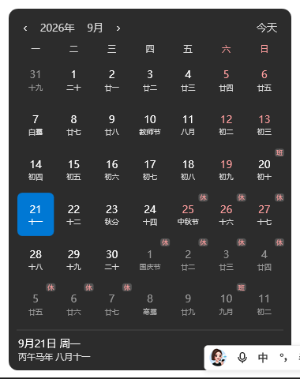

点击任务栏右下角时钟，弹出自研精美月历。自带农历、二十四节气与国务院法定节假日「休/班」角标；不破坏原生时钟外观，不影响通知中心，极致轻量无负担。

专为 Windows 11 量身雕琢的桌面细节增强，轻巧、自然、纯粹
内置高精度公农历推算算法，支持初一月名转换、除夕/中秋/端午等民俗节日，二十四节气毫厘不差。
依据中国政府网最新节假日排班公告，后台静默校验更新；法定节假日红字标「休」，周末调休绿字标「班」。
遵循 Windows 11 Fluent 现代视觉规范，具备微阴影与圆角布局；自动跟随系统深/浅色模式无缝变换。
不注入进程、不使用全局鼠标钩子（规避杀毒误报）；以纯 Win32 隐形穿透层捕获点击，干净清爽。
空闲时进程进入休眠状态，CPU 占用率始终为 0%；日常内存占用仅约 20MB 左右，比浏览器一个标签页更省。
内置 UI Automation 4 级容灾定位，深度兼容 Win11 24H2 及 25H2 多种时钟类名；支持点击位置自定义微调。
完全绿色免安装，解压后双击即可立即生效
点击上方「立即下载」获取最新版本 zip（仅约 132KB），解压到你喜欢的任意目录（如 D:\Tools\TaskbarCalendar）。
启动 TaskbarCalendar.exe。若弹出 SmartScreen 拦截提示，点击「更多信息」→「仍要运行」即可。
程序已在系统托盘常驻。此时点击任务栏右下角时钟，日历面板即刻展现在你眼前！托盘右键可一键设置开机自启动。
本项目基于 .NET 8 构建以换取极小体积与极致性能。首次运行时若系统未安装，Windows 会自动弹窗引导前往微软官网下载安装（约 55MB，只需安装一次，全电脑 .NET 软件通用）。
👉 微软官方 .NET 8 桌面运行时下载直链了解更多关于原理与日常使用的细节
完全不受影响！ 本程序仅替换「点击时钟弹出日历」的操作行为。通知中心可随时通过点击时钟右侧的通知铃铛图标，或按下全局快捷键 Win + N 照常呼出。
右键任务栏右下角的托盘图标（蓝色日历图标），点击「设置」，在常规设置中勾选「开机自动启动」即可；也可以直接在托盘右键菜单中快速勾选。
不需要。 程序内置自动同步机制，每天会在后台静默校验国务院公布的最新节假日安排并存入本地缓存；即使完全离线运行，也能显示已缓存的节假日排班。
打开「设置」→「时钟区域校准」，提供了水平与垂直像素偏移微调滑块；针对特殊系统多屏环境，还支持「5秒手动取点校准」，指哪打哪。
右键托盘图标选择「退出」，然后直接删除解压的程序文件夹即可。绿色软件不在系统目录制造残留文件，零注册表垃圾。